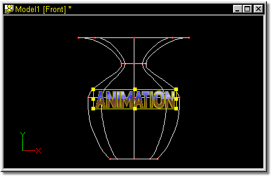
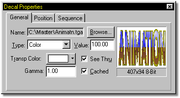
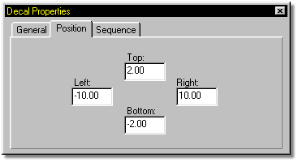
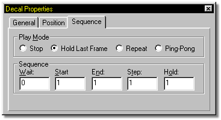

Mapping 2D images on a 3D object is one of the secrets to making a richly
textured and believable character. For animation, these mapped images need to
stretch and deform along with the surface they are glued to.
Mapping 2D images on a 3D object is one of the secrets to making a richly
textured and believable character. For animation, these mapped images need to
stretch and deform along with the surface they are glued to.

The process of taking a 2-D image and gluing it onto a 3-D object is called decaling. A single model can have multiple images decaled onto it, and a single image can be decaled onto a model multiple times.
Keep in mind that before applying a decal, the parts of the model you do not want the decal to apply to need to be hidden.
To open a decal, right click the name of the model you are working with in the Project Workspace by right clicking on it. Then select Import/Decal from the popup menu. This will start an “open image” file requester box which you can use to browse and choose your image. Once you have selected your image, it will appear in the Modeler workspace surrounded by a manipulator box which allows you to translate and scale the decal.

The Properties Panel will update with information about the image you’ve selected and options pertaining to the decal.

General Tab Properties - Click on image for more info

Position Tab Properties - Click on image for more info

Sequence Tab Properties - Click on image for more info
Decal Types
Applying/Removing Decals